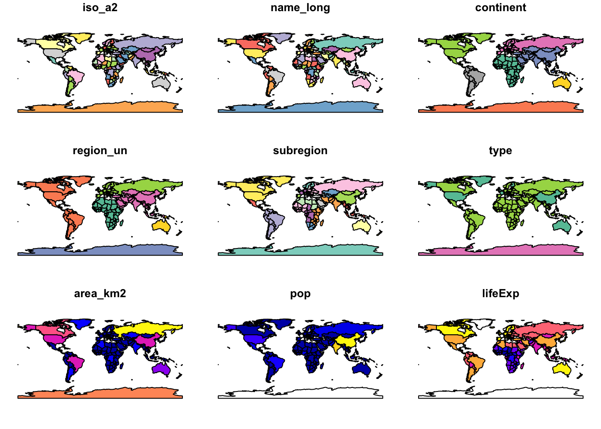

Code
library(leaflet)
popup = c("Robin", "Jakub", "Jannes")
leaflet() |>
addProviderTiles("NASAGIBS.ViirsEarthAtNight2012") |>
addMarkers(lng = c(-3, 23, 11),
lat = c(52, 53, 49),
popup = popup)R’s flexibility and evolving geographic capabilities is interactive map making. This is demonstrated by the following code chunk, which creates Figure 3.1.
library(leaflet)
popup = c("Robin", "Jakub", "Jannes")
leaflet() |>
addProviderTiles("NASAGIBS.ViirsEarthAtNight2012") |>
addMarkers(lng = c(-3, 23, 11),
lat = c(52, 53, 49),
popup = popup)The use of R code, therefore, enables teaching geocomputation with reference to reproducible examples representing real world phenomena, rather than just abstract concepts.
The packages needed to reproduce Part 1 of this book can be installed with the following command: remotes::install_github(“geocompr/geocompkg”). This command uses the function install_packages() from the remotes package to install source code hosted on the GitHub code hosting, version and collaboration platform.
The following command will install all dependencies required to reproduce the entire book (warning: this may take several minutes): remotes::install_github(“geocompr/geocompkg”, dependencies = TRUE)
library(sf)Linking to GEOS 3.11.1, GDAL 3.6.2, PROJ 9.1.1; sf_use_s2() is TRUElibrary(spData)
library(spDataLarge) We will use the world dataset provided by spData, loaded at the beginning of this chapter, to show what sf objects are and how they work. world is an ‘sf data frame’ containing spatial and attribute columns, the names of which are returned by the function names() (the last column in this example contains the geographic information):
class(world)[1] "sf" "tbl_df" "tbl" "data.frame"names(world) [1] "iso_a2" "name_long" "continent" "region_un" "subregion" "type"
[7] "area_km2" "pop" "lifeExp" "gdpPercap" "geom" We will plot this world class by using plot()
plot(world)